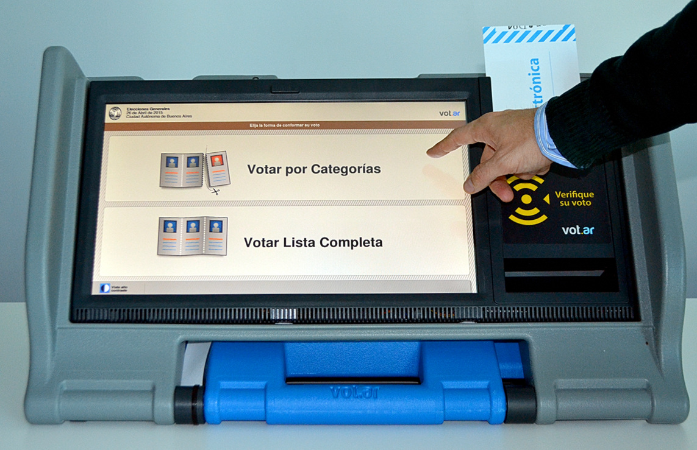

Los problemas de
votar
Los problemas de
La “boleta única electrónica”
(vot.ar®)
- Sistema de voto electrónico con respaldo en papel.
- El voto es impreso en el papel y almacenado en un chip RFID.
- La máquina que es usada para votar, es usada luego para contar.
- La máquina imprime actas y telegramas.
- La máquina transmite telegramas para el escrutinio provisorio.
- La máquina asiste en el escrutinio definitivo.
La boleta
La boleta
(Ahora sí)
El chip RFID

La máquina
Apertura de mesa
- Se enciende la máquina y se inserta el DVD.
- El presidente se identifica usando credencial (RFID) y clave (PIN).

Apertura de mesa
- Selecciona opción de Apertura de Mesa e ingresa la información solicitada.
- Inserta una boleta especial donde se imprimirán y grabarán los nombres del presidente y fiscales, y la hora de apertura.

Votación
- El votante se identifica en la mesa y el Presidente le entrega una boleta, renteniendo la mitad del troquel.
- Se dirige a la computadora de votación e inserta la boleta.

Votación
- Usando la pantalla táctil, el votante elige la composición de su voto.
- Al finalizar, el sistema imprime la boleta y graba el chip RFID.
Votación
- El votante puede acercar el chip RFID al lector y la máquina mostará lo que está grabado en él (*).

Votación
- El votante debe doblar la boleta por la mitad (para que el chip no pueda ser leído).
- El votante vuelve a la mesa y el presidente compara el troquel retira la mitad restante.
- Finalmente, el votante introduce la boleta en la urna.
Escrutinio de mesa
A las 18 horas, luego de finalizada la votación:
- El Presidente aproxima su credencial y luego el Acta de Apertura.
- Selecciona la opción de Cierre de Mesa.
- Inserta una boleta especial llamada Acta de Cierre y Escrutinio.
Escrutinio de mesa
- El Presidente abre la urna.
- Retira cada boleta y la acerca a la máquina, que leerá y contará lo grabado en el chip RFID (debiendo verificarse que coincide lo impreso y lo contado).
- Al finalizar, se imprime y graba el acta de Cierre y Escrutinio (varias copias).
Escrutinio provisorio
- El técnico de MSA arranca la máquina con el software de transmisión y la conecta a Internet.
- El delegado de la Justicia Electoral recibe de cada presidente el Acta de Cierre.
- La máquina lee el chip RFID del Acta de Cierre y transmite los resultados al centro de cómputos.
¿Qué podría salir mal?
Los técnicos
(Y la importancia del software)
La votación
(Buenos Aires, 5 de julio de 2015)
El escrutinio
(Neuquén, 4 de octubre de 2015)
¿Cambiar el CD?
La transmisión
(Buenos Aires, julio de 2015)


Auditorías
(¿La solución a todos los problemas?)
Auditorías
- Salta: Universidad Nacional de Salta.
- CABA:
- Universidad de Buenos Aires ($1.500.000)
- Instituto Tecnológico de Buenos Aires (¿sin código fuente?)
- ¿Partidos políticos?
Algunos problemas
(Que ninguna auditoría detectó)
Multivoto
(Múltiples votos en una sola boleta)
Multivoto
(Iterando sobre la entrada)
for elem in datos_tag.voto_categoria:
cod_categoria = elem["cod_categoria"].strip()
cod_candidato = elem["cod_candidatura"].strip()
if cod_candidato == COD_LISTA_BLANCO:
candidato = Candidato.one(codigo__endswith=cod_candidato,
cod_categoria=cod_categoria)
else:
candidato = Candidato.one(codigo__endswith="." + cod_candidato,
cod_categoria=cod_categoria)
candidatos.append(candidato)
Credenciales vulnerables
(Cualquiera puede ser presidente o técnico)
COD_TAG_VACIO = '\x00\x00'
COD_TAG_VOTO = '\x00\x01'
COD_TAG_USUARIO_MSA = '\x00\x02'
COD_TAG_PRESIDENTE_MESA = '\x00\x03'
COD_TAG_RECUENTO = '\x00\x04'
COD_TAG_APERTURA = '\x00\x05'
COD_TAG_DEMO = '\x00\x06'
COD_TAG_VIRGEN = '\x00\x07'
COD_TAG_INICIO = '\x00\x7F'
COD_TAG_ADDENDUM = '\x00\x80'
COD_TAG_NO_ENTRA = '\x00\x45'
COD_TAG_DESCONOCIDO = '\xff\xff'
El hardware
(¿computadora o impresora?)
Puertos
(Demasiado para una impresora)

Arquitectura

Sistema oculto

Elección en CABA
Sobre el chip RFID
(Identificando por radiofrecuencia)
El chip RFID
- Cada chip tiene un identificador único de fábrica. (Es votar con boletas numeradas).
- No se utiliza ningún tipo de cifrado o autenticación.
- El modelo utilizado (NXP ICODE SLI/SLIX) puede leerse hasta desde 50 cm.
Comprando votos
(El puntero digital)
Contando los votos
(¡Sin abrir la urna!)

RFID zapper
(Quemando boletas sin hacer humo)
RFID zapper

¡Pero no es vulnerable!
Y no hacen falta fiscales
(Porque es todo de una seguridad absoluta)
Venezuela
- Sistema de voto electrónico con respaldo en papel.
- Similar a Vot.Ar pero con QR en vez de RFID.
- Smartmatic se presentó a la licitación de CABA.
La respuesta a las críticas
Diputado Marcelo Wechsler
Más información
Los problemas de
votar